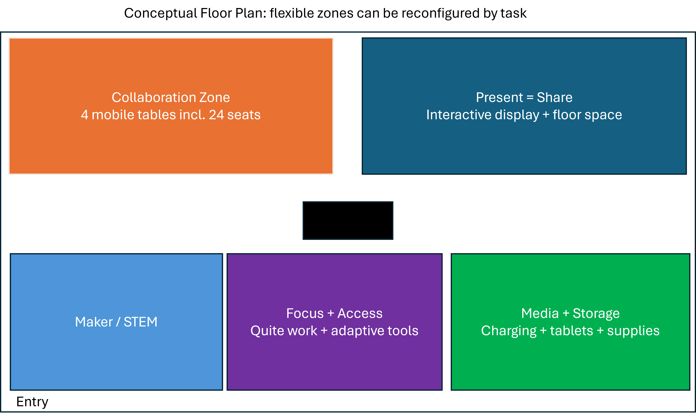

Rethinking the Computer Lab
What if the computer lab were designed around learning - not computers?
When many of us hear computer lab, we probably picture rows of desks with students facing individual screens. Technology has changed dramatically, but in many schools, the idea of the computer lab has not changed nearly as much.
For my “ultimate computer lab,” I wanted to imagine something different: a Flexible Digital Learning & Innovation Lab where technology supports what students actually need to do - investigate, create, collaborate, communicate, practice, and reflect.
Research on active learning spaces supports this shift. Carlos et al. (2024) found that effective active learning environments tend to emphasize flexibility, collaboration, student-centered learning, and access to technology. Similarly, Casanova et al. (2023) argue that technology in a learning space should be easy to use, reliable, and connected to meaningful pedagogy. In other words, the goal should not be to fill a room with as much technology as possible. The goal should be to create better opportunities for learning.
A Room That Changes With the Learner
My proposed lab would serve up to 24 students in grades 3-6 and would include five flexible areas:

That balance is intentional. A sophisticated device does not automatically produce sophisticated learning. Carlos et al. (2024) caution that highly equipped learning environments do not necessarily lead to better outcomes simply because they contain more technology. Teachers also need usable tools, thoughtful instructional design, and the flexibility to select the right resource for the learning goal.
Accessibility From the Beginning
One of the most important parts of the design is that accessibility is not treated as an afterthought. These features are part of the shared environment:
This means that students can work toward the same learning goal through different pathways. One student might type an explanation, another might annotate a digital diagram, while another records an oral response. The objective remains consistent even when the way students access or demonstrate learning differs.
The Bigger Idea
My ultimate computer lab is really less about computers than it is about choice, access, creativity, and purposeful learning.
Technology should help us do something better - not simply do the same thing on a screen.
If I had $60,000 to invest in a learning space, that is where I would begin.
References
- Carlos, V., Reses, G., & Soares, S. C. (2024). Active learning spaces design and assessment: A qualitative systematic literature review. Interactive Learning Environments, 32(6), 2925-2942. doi.org/10.1080/10494820.2022.2163263
- Casanova, D., Huet, I., & Garcia, F. (2023). The experience of co-designing a learning space with teachers and students. Education Sciences, 13(2), 103. doi.org/10.3390/educsci13020103